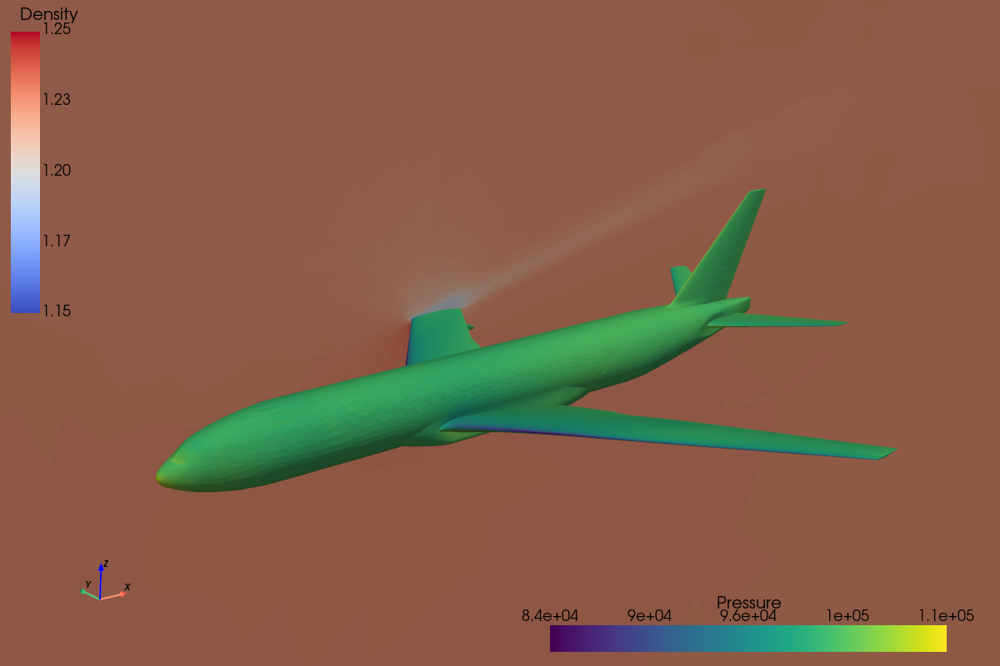

Towards custom mesh manipulation
The previous tutorial had you search the documentation for functionalities and chain them together to create your workflow. In this tutorial, you will take a step on the developer side, as some questions require you to manipulate the mesh directly, especially in the second part of the tutorial.
This time, we will explore some post processing capabilities of maia. We work on an CRM airplane mesh, with data fields computed by a solver.
To run this tutorial, you need to download the input mesh airplane.cgns and
the script 04_post.py. We prepared few functions for you in the script,
but you will need to complete it as usual.
Basic postprocessing
Warmup
👉️ As usual, we import the useful modules and we get the MPI communicator
from mpi4py import MPI
comm = MPI.COMM_WORLD
import maia
import maia.pytree as PT
👉️ Then, we use the following function which simulates a solver run.
tree = get_solver_tree()
❓ What is the parallel kind of the returned tree ?
The tree is partitioned. Since the function get_solver_tree is private, the only way to answer the question is
to display the tree with print_tree().
Extraction
The first task is to extract a surface mesh from the input volumetric mesh.
As is often the case, the surfaces of the input mesh are flagged with FamilyName
nodes to indicate their logical group. Here, we want to extract the airplane surface,
which is referred to as the Walls family.
✏️ Extract a surfacic mesh corresponding to the faces belonging to Walls family
Show solution
surf_tree = maia.algo.part.extract_part_from_family(tree, 'Walls', comm)
[stdout:0] Extraction from Family "Walls" completed (0.13 s) -- Extracted tree has locally 20.7K faces (Σ=123.4K)
❓ What is the dimension of the returned tree ?
The output mesh has a CellDimension() of two, because
we extracted surfacic entities.
Fortunately, several of Maia’s functions allow 2D trees to be used as input.
Note that the output tree is still a partioned tree: as you learned in the
first tutorial, functions belonging to maia.algo do not change
the parallel nature of trees. In the first tutorial, we used the Transfer module
to bring back data to a distributed tree and save it using maia.io.dist_tree_to_file().
❓ Here, we can no do that. Why ?
The extraction function created a new partitioned tree. There is no distributed tree associated to it.
👉 We can still save the partitioned tree using maia.io.part_tree_to_file():
maia.io.part_tree_to_file(surf_tree, 'airplane_walls_part.cgns', comm)
However, if you display it with maia_print_tree or visualise it, you will notice that
the mesh retains information about parallelism.
This is not satisfactory because we want a unified result that is independent of parallelism.
Indeed, we need to develop a distributed vision of the partitioned tree — the reverse of the partitioning process.
✏️ Use maia.factory.recover_dist_tree() to rebuild a distributed view of the tree.
Then, write it on the disk.
Hint : do not forget to transfer the data fields as well
Show solution
dsurf_tree = maia.factory.recover_dist_tree(surf_tree, comm, data_transfer='FIELDS')
maia.io.dist_tree_to_file(dsurf_tree, 'airplane_walls.cgns', comm)
[stdout:0] Distributed write of a 1.5MiB dist_tree (Σ=9.1MiB)...
Write completed [airplane_walls.cgns] (0.72 s)
Tip
Saving partitioned trees is useful mainly for experimentation or debugging purposes, but it should be avoided in a finalized workflow.
Slice
Another family of post processing functionnalities are isosurface and slices functions.
✏️ Create a plane slice from the equation \(y=1\).
Show solution
slice_tree = maia.algo.part.plane_slice(tree, [0.,1.,0.,1], comm)
[stdout:0] Plane slice completed (0.25 s)
❓ Do you have any data fields on the output tree ? If not, modify your
call to the slicing function to ensure that the volumic solution
FlowSolution#Centers is transfered on the slice.
Show solution
slice_tree = maia.algo.part.plane_slice(tree, [0.,1.,0.,1], comm,
containers_name=['FlowSolution#Centers'])
[stdout:0] Plane slice completed (0.36 s)
👉️ Then, we save the slice on the disk using the same methodology as above:
dslice_tree = maia.factory.recover_dist_tree(slice_tree, comm, data_transfer='FIELDS')
maia.io.dist_tree_to_file(dslice_tree, 'airplane_slice.cgns', comm)
[stdout:0] Distributed write of a 1.7MiB dist_tree (Σ=10.5MiB)...
Write completed [airplane_slice.cgns] (0.55 s)
Combining the surfacic extraction and slice, we obtain the following visualization.

Did you notice ?
If you open the surfacic mesh by yourself, you will have only half of the plane. Can you guess which other function of maia we used to generate this figure ?
1D profile
In this last step, we are going to update again our slice in order to plot a one dimensioanl profile \(P = f(x)\) around the wing.
❓ Do you see the pressure array in the slice tree ? Why ?
We transfered the volumic fields FlowSolution#Centers to the slice, but there is no volumic pressure field
in the input mesh.
All we have is a FaceCenter value of the pressure in the BCDataSet related to the wing.
✏️ As the slice function can only transfer containers of type FlowSolution_t or ZoneSubRegion_t,
create a container of type ZoneSubRegion_t on the volumic tree and move the fields inside it.
Hint : you can do it by hand, or using a function of maia.pytree
Show solution
for zone in PT.get_all_Zone_t(tree):
if PT.get_node_from_name_and_label(zone, 'Wing', 'BC_t') is not None:
PT.new_ZoneSubRegion('WingFields', bc_name='Wing', parent=zone)
PT.subregion_fields_from_bcdataset(tree)
️ ✏️ Update (one last time) the slice function call to get the wing pressure field on the computed slice
Show solution
slice_tree = maia.algo.part.plane_slice(tree, [0.,1.,0.,1], comm,
containers_name=['FlowSolution#Centers', 'WingFields'])
[stdout:0] Plane slice completed (0.77 s)
👉️ You should now have a EdgeCenter pressure field on the slice tree:
if comm.rank == 0:
PT.print_tree(slice_tree, max_depth=3)
[stdout:0]
CGNSTree CGNSTree_t
├───CGNSLibraryVersion CGNSLibraryVersion_t R4 [4.2]
└───Base CGNSBase_t I4 [2 3]
└───Zone.P0.N0 Zone_t I4 [[15847 31192 0]]
├───ZoneType ZoneType_t "Unstructured"
├───GridCoordinates GridCoordinates_t
│ ╵╴╴╴ (3 children masked)
├───TRI_3 Elements_t I4 [5 0]
│ ╵╴╴╴ (3 children masked)
├───BAR_2 Elements_t I4 [3 0]
│ ╵╴╴╴ (3 children masked)
├───ZoneBC ZoneBC_t
│ ╵╴╴╴ (1 child masked)
├───:CGNS#GlobalNumbering UserDefinedData_t
│ ╵╴╴╴ (2 children masked)
├───maia#surface_data UserDefinedData_t
│ ╵╴╴╴ (6 children masked)
├───FamilyName FamilyName_t "Unspecified"
├───FlowSolution#Centers FlowSolution_t
│ ╵╴╴╴ (6 children masked)
└───WingFields ZoneSubRegion_t
╵╴╴╴ (7 children masked)
Note
If you launch the script in parallel, only the processes touching the wing BC_t on the slice have
the ZoneSubRegion_t node (as for the volumic tree).
✏️ We have a EdgeCenter located pressure, we need a EdgeCenter located position to plot the profile.
Compute the centers of the edges on slice_tree using maia.algo.compute_elements_center().
Show solution
maia.algo.compute_elements_center(slice_tree, 1, comm)
Now starts the difficult part: we have the center of all edges, but the pressure is
defined only for edges belonging the BC_t subset Wing.
Thus, we need to extract the center for edges in the Wing subset.
The steps to do it are:
get the component X of the computed edges center (computed for all edges)
get the list of edges indices belonging to the Wing subset, ie the
PointListof theBC_tor of the relatedZoneSubRegion_tnode (the two should be equal)use these indices to extract X centers (be careful, the indices must be shifted to start at 0)
Attention
Keep in mind that some ranks may not know the Wing subset at all. For these ranks, empty arrays must be created. This is the main pitfall of working with partitioned meshes.
✏️ Implement the above strategy to compute the x and pressure arrays on each rank.
Show solution
import numpy as np
zsr_n = PT.get_node_from_name(slice_tree, 'WingFields')
if zsr_n is not None:
# Get X component of computed edge centers
center_x = PT.get_value(PT.get_node_from_name(slice_tree, 'CenterX'))
# Get edges ids belonging to Wing subset
edge_ids = PT.get_np_value(PT.get_child_from_name(zsr_n, 'PointList'))[0]
# Get edge offset
edge_n = PT.get_node_from_predicate(slice_tree, PT.pred.is_element_of_type('BAR_2'))
offset = PT.Element.Range(edge_n)[0]
# Extract x values, and get pressure field
x = center_x[edge_ids - offset]
pressure = PT.get_value(PT.get_child_from_name(zsr_n, 'Pressure'))
else:
# Create empty array for ranks not related to the Wing subset
x = np.empty(0, dtype=np.float64)
pressure = np.empty(0, dtype=np.float64)
👉️ Then, you can use the following function to plot the \(P=f(x)\) profile:
plot_1d_profile(x, pressure, comm)
This ends the first part of this tutorial 🏁 !
We explored some of maia’s postprocessing capabilities to produce results of interest
in a parallel context. We even started to manipulated partitioned meshes by hand.
The final script should now look like this: 04_post_final.py.
The next section will take us a step further: we will manipulate partitioned trees more directly and implement some of the missing pieces ourselves.
Advanced partitioned algorithms
🏗️ Under construction